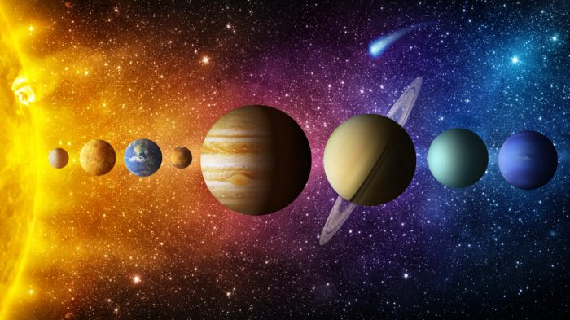
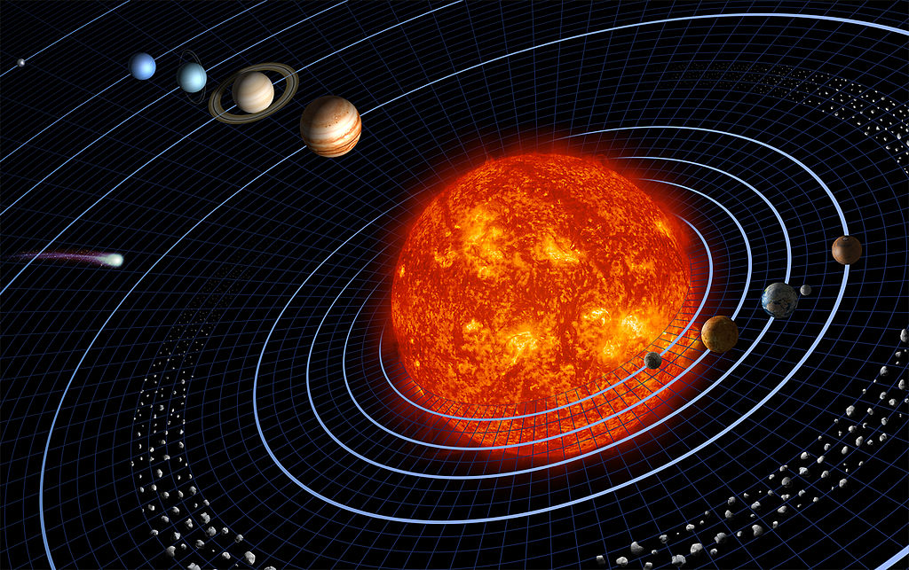
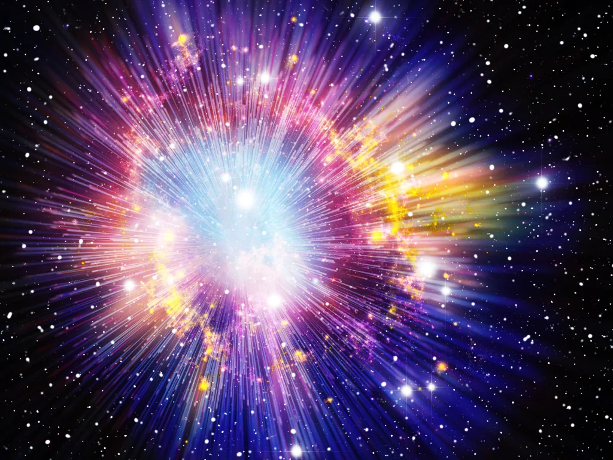

IL SISTEMA SOLARE
Il Sistema solare e' il sistema planetario costituito da una varieta' di corpi celesti mantenuti in orbita dalla forza di gravita' del Sole.

Ha un diametro di circa 240-260 UA ed è situato nel braccio di Orione della Via Lattea, orbitando attorno al centro galattico a una distanza di 30000 al (anni luce) e una velocità di 230 km/s.
È costituito dal Sole, da otto pianeti (quattro pianeti rocciosi interni e quattro giganti gassosi esterni) e cinque pianeti nani, dai rispettivi satelliti naturali e da moltissimi altri corpi minori. Quest'ultima categoria comprende gli asteroidi, in gran parte ripartiti fra due cinture asteroidali (la fascia principale e la fascia di Kuiper), le comete, i meteoroidi e la polvere interplanetaria.

Le teorie più accreditate sulla formazione del Sistema solare descrivono la sua nascita 4,6 miliardi di anni fa a partire dalla frammentazione e dal collasso gravitazionale di una gigantesca nube molecolare dal diametro di 65 anni luce. Al centro collassò una quantità di gas e polveri tale da raggiungere la massa necessaria per innescare le reazioni termonucleari. Nacque, così, una protostella; mentre i pianeti si generarono per accrescimento, formando all'inizio qualche decina di piccoli pianeti che nel sistema caotico primordiale ogni tanto si scontravano per formare corpi sempre più grandi.
La contrazione causò un aumento della velocità di rotazione e della forza centrifuga del sistema. Così la nube si sarebbe appiattita, assumendo un aspetto simile a un disco rotante intorno al Sole.
Mentre il nucleo del proto-Sole si riscaldava fino a raggiungere le temperature necessarie per le reazioni termonucleari, nel disco circostante accrescevano alcuni corpi attraverso delle collisioni e attirando frammenti più piccoli presenti nello spazio circostante. Si sarebbero formati così i protopianeti, dai quali sarebbero derivati gli attuali pianeti, mentre il proto-Sole si trasformava in una stella gialla e stabile.
Il vento solare contribuiva a spazzare via gli elementi leggeri verso le regioni più esterne, soprattutto l'idrogeno e l'elio. Il Sistema solare esterno manteneva una temperatura relativamente bassa, permettendo a sostanze come metano e acqua di condensare. La differenza in questo tipo di accrescimento ha determinato le caratteristiche dei pianeti, piccoli e rocciosi all'interno, per la scarsa presenza di elementi pesanti e giganti all'esterno, che gli hanno permesso di catturare i gas di idrogeno e elio sparsi nello spazio.
